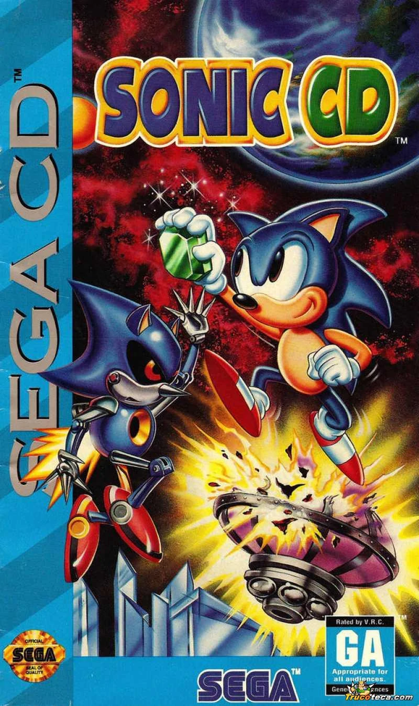
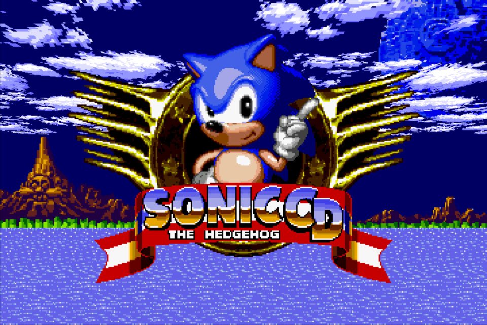
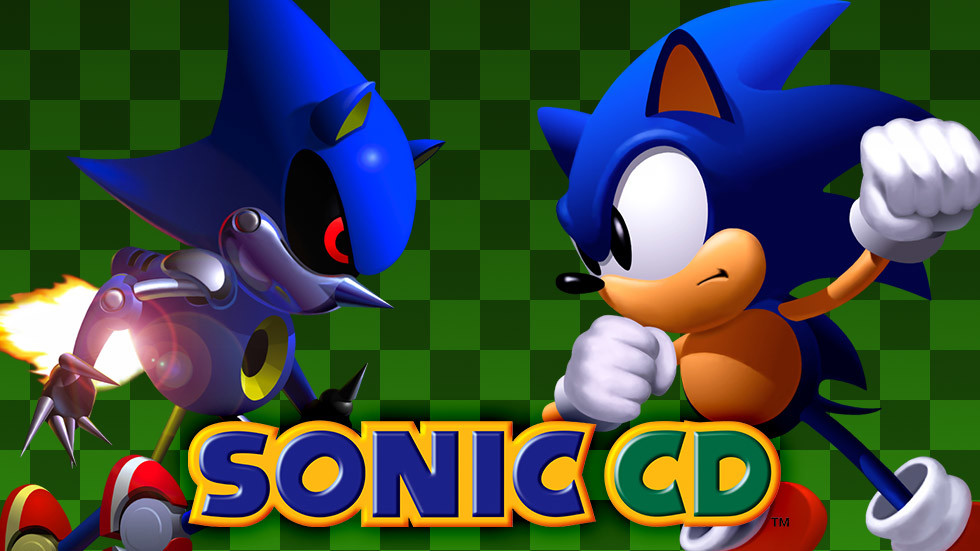

Sonic the Hedgehog CD (ソニック・ザ・ヘッジホッグCD Sonikku za Hejjihoggu Shī Dī?, comúnmente abreviado Sonic CD) es un videojuego de plataformas de la saga Sonic, desarrollado y publicado por Sega protagonizado por Sonic el Erizo. Fue lanzado para la SEGA CD en 1993, y, posteriormente, en 1996, llevado a Windows 95. Tiempo después, a finales del 2011, y para rememorar los 20 años de vida del personaje, Sonic CD pasaría a relanzarse para videoconsolas de sobremesa de séptima generación y teléfonos inteligentes, en una versión restaurada y mejorada. Este juego marca la primera aparición de Metal Sonic, y de Amy Rose, como personajes que enriquecerían la historia del erizo azul.
Sonic CD fue lanzado tras Sonic the Hedgehog 2, pero antes que Sonic the Hedgehog 3. Sin embargo, esto es debido a los constantes retrasos del juego, ya que Sonic CD iba a salir, supuestamente, antes que Sonic 2. Es por esta razón que la evolución de Sonic a Súper Sonic nunca se presentó en este juego (al haber sido ideado posteriormente y por otro equipo de desarrollo)
Desarrollo

Tras el lanzamiento de Sonic the Hedgehog, el programador jefe Yuji Naka había acabado muy insatisfecho con las rígidas políticas de la compañía, así que se mudó a América a trabajar con el Sega Technical Institute. Además gran parte del grupo original de diseño de Sonic también se fue, para ayudar a los desarrolladores americanos. Con la mitad del Sonic Team y 2 de sus más importantes creadores presentes, el Sega Technical Institute acabó con la tarea de desarrollar la secuela Sonic the Hedgehog 2.
Mientras, en Japón, Sonic CD fue desarrollado por un grupo desarrollador aparte, encabezado por el creador de Sonic, Naoto Ohshima. En un principio, como se reveló en diversas entrevistas y revistas, Sonic CD, y Sonic 2 para Mega Drive (Genesis en Norteamérica), Master System y Game Gear iban a ser el mismo juego. Sin embargo, durante el desarrollo de Sonic CD, este evolucionó a un tipo diferente de juego. Eventualmente, la jugabilidad de Sonic 2 sería la usada en futuros juegos, pero esto explica por qué el estilo y jugabilidad de Sonic CD son diferentes, así como el uso de los sprites de Sonic the Hedgehog en el juego, la forma del Spin Dash, movimientos agregados como el Super Peel-Out, la forma musical del juego, que no sería usada hasta lanzamientos de juegos modernos de la saga (por el estilo musical futurístico usado), y la trama de viaje en el tiempo, que no se aplicaría en ningún juego de la saga en el futuro.
Sistema de juego

El elemento clave de este juego es el hecho de que el jugador puede viajar a 4 versiones diferentes de cada nivel, en 3 períodos diferentes (Pasado, Presente, Mal Futuro y Buen Futuro). Esto se consigue gracias a unos postes que hay esparcidos por el nivel, con letreros de Pasado y Futuro. Los badniks tienen diferente capacidad de sistema. En el pasado todos los robots funcionan correctamente y serán duros de derrotar. En el futuro todos los robots están averiados, por lo que serán fáciles de vencer. En el presente algunos robots funcionan bien como en el Pasado mientras que otros están averiados como en el Futuro. De igual manera cuando Sonic destruye el generador (en el pasado) todos los badniks se transforman en flores, tanto en el pasado como en el buen futuro, en el Presente siguen algunos vivos.
Como casi todos los juegos de Sonic de esta era, cada nivel está dividido en 3 actos (aunque son denominadas Zonas en este juego, tanto como los niveles son denominadas rondas), desarrollándose el 3º siempre en el Futuro. El juego en general tiene un estilo algo extraño.